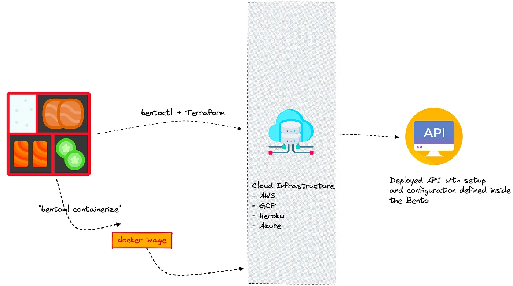

Summary
BentoML 등장 배경
BentoML is designed for teams working to bring machine learning (ML) models into production in a reliable, scalable, and cost-efficient way. In particular, AI application developers can leverage BentoML to easily integrate state-of-the-art pre-trained models into their applications. By seamlessly bridging the gap between model creation and production deployment, BentoML promotes collaboration between developers and in-house data science teams.
항상 많은 라이브러리들이 새롭게 등장하고, 보통 이 라이브러리들은 해결하려고 하는 핵심 문제가 존재 함.
BentoML이 해결하려는 문제
-
Model Serving Infra의 어려움
-
Serving을 위해 다양한 라이브러리, artifact, asset 등.. 사이즈가 큰 파일을 패키징 해야함
-
Cloud service에 지속적으로 배포하기 위해 많은 작업이 필요함
-> BentoML은 CLI로 이 문제의 복잡도를 낮추려고 함(CLI 명령어로 모두 진행 가능)
-
-
Online Serving의 Monitoring 및 Error Handling
- Online Serving으로 API 형태로 생성
- Error 처리, Logging을 추가로 구현해야 함
- BentoML은 Python Logging Module을 사용해 Access Log, Prediction Log를 기본으로 제공
- Config를 수정해 Logging도 커스텀할 수 있고, Prometheus 같은 Metric 수집 서버에 전송할 수 있음
-
Online Serving의 포퍼먼스 튜닝의 어려움
- Adaptive Micro Batch 방식을 채택해 동시에 많은 요청이 들어와도 높은 처리량을 보여줌
BentoML 특징
Serving에 특화된 가벼운 라이브러리로 볼 수 있음
- 쉬운 사용성
- Online/Offline Serving 지원
- Tensorflow, PyTorch, Keras, XGBoost 등 메이저 프레임워크 지원
- Docker, Kubernetes, AWS, Azure 등의 배포 환경 지원 및 가이드 제공
- Flask 대비 100배의 처리량
- 모델 저장소(Yatai) 웹 대시보드 지원
- 데이터 사이언스와 데브옵스 사이의 간격을 좁혀주고, 높은 성능의 serving 지원

출처 - https://towardsdatascience.com/10-ways-bentoml-can-help-you-serve-and-scale-machine-learning-models-4060f1e59d0d
BentoML 사용하기
1. BentoML 설치
- BentoML은 python 3.6 이상만 지원
- pyenv 등으로 파이썬 버전을 설정해서 진행
- 가상환경 virtualenv 또는 poetry로 설정
pip install bentoml
2. BentoML Flow
- 모델 학습 코드 생성
- Prediction Service Class 생성
- Prediction Service에 모델 저장
- Serving
- Docker Image Build(컨테이너화)
- Serving 배포
Prediction Service Class 생성
1
2
3
4
5
6
7
8
9
10
11
12
13
14
15
16
17
18
19
20
21
22
# bento_service.py
import pandas as pd
from bentoml import env, artifacts, api, BentoService
from bentoml.adapters import DataframeInput
from bentoml.frameworks.sklearn import SklearnModelArtifact
@env(infer_pip_packages=True)
@artifacts([SklearnModelArtifact('model')])
class IrisClassifier(BentoService):
"""
A minimum prediction service exposing a Scikit-learn model
"""
@api(input=DataframeInput(), batch=True)
def predict(self, df: pd.DataFrame):
"""
An inference API named `predict` with Dataframe input adapter, which codifies
how HTTP requests or CSV files are converted to a pandas Dataframe object as the
inference API function input
"""
return self.artifacts.model.predict(df)
- BentoService를 활용해 Prediction Service Class 생성
- 예측할 때 사용하는 API를 위한 Class
1
2
@env(infer_pip_packages=True)
@artifacts([SklearnModelArtifact('model')])
@env: 파이썬 패키지, install script 등 서비스에 필요한 의존성을 정의@artifacts: 서비스에서 사용할 artifact 정의 -> Sklearn, XGboost, Pytorch 등 ..
1
2
3
4
5
6
7
8
9
10
11
12
13
class IrisClassifier(BentoService):
"""
A minimum prediction service exposing a Scikit-learn model
"""
@api(input=DataframeInput(), batch=True)
def predict(self, df: pd.DataFrame):
"""
An inference API named `predict` with Dataframe input adapter, which codifies
how HTTP requests or CSV files are converted to a pandas Dataframe object as the
inference API function input
"""
return self.artifacts.model.predict(df)
- BentoService를 상속하면 해당 서비스를 Yatai(모델 이미지 레지스터리)에 저장
@api: API 생성- Input과 Output을 원하는 형태(Dataframe, Tensor, JSON 등..)으로 선택할 수 있음
- Doc string으로 Swagger에 들어갈 내용을 추가할 수 있음
@artifacts에 사용한 이름을 토대로self.artifacts.model로 접근
Prediction Service에 저장(Pack)
1
2
3
4
5
6
7
8
9
10
11
12
13
14
15
16
17
18
19
20
21
# bento_packer.py
# 모델 학습
from sklearn import svm
from sklearn import datasets
clf = svm.SVC(gamma='scale')
iris = datasets.load_iris()
X, y = iris.data, iris.target
clf.fit(X, y)
# bento_service.py에서 정의한 IrisClassifier
from bento_service import IrisClassifier
# IrisClassifier 인스턴스 생성
iris_classifier_service = IrisClassifier()
# Model Artifact를 Pack
iris_classifier_service.pack('model', clf)
# Model Serving을 위한 서비스를 Disk에 저장
saved_path = iris_classifier_service.save()
- Model Artifact를 주입
-
BentoML Bundle : Prediction Service를 실행할 때 필요한 모든 코드, 구성이 포함된 폴더, 모델 제공을 위한 바이너리
- CLI에서
python bento_packer.py실행 -> Saved to ~ 경로가 보일 것임 - BentoML에 저장된 Prediction Service 확인
bentoml list
- BentoML에 저장된 Prediction Service 폴더로 이동 후 파일 확인
tree명령어로 디렉토리 구조 확인 (tree -L 4)
bentoml.yml에 모델의 메타 정보, 패키지 환경, API input/output, Docs 등을 확인 할 수 있음
Serving
Yatai Service 실행
bentoml yatai-service-start- localhost:3000
Docker Image Build
bentoml containerize IrisClassifier:latest -t iris-classifierdocker images로 빌드된 이미지 확인
-> docker 명령이나 FastAPI를 사용하지 않고 웹 서버를 띄우고, 이미지 빌드!
Bentoml Component
- BentoService
- Service Environment
- Model Artifact
- Model Artifact Metadata
- Model Management & Yatai
- API Function and Adapters
- Model Serving
- Labels
- Retrieving BentoServices
- Web UI
BentoService
bentoml.BentoService는 예측 서비스를 만들기 위한 베이스 클래스@bentoml.artifacts: 여러 머신러닝 모델 포함할 수 있음@bentoml.api: Input/Output 정의- API 함수 코드에서 ```self.artifacts.{ARTIFACT_NAME}으로 접근 가능
- 파이썬 코드와 관련된 종속성 저장
Service Enviroment
- 파이썬 관련 환경, Docker 등을 설정 가능
@bentoml.env(infer_pip_packages=True): import를 기반으로 필요한 라이브러리 추론requirements_txt_file을 명시할 수 있음pip_packages=[]를 사용해 버전을 명시할 수 있음docker_base_image를 사용해 Base image를 지정 가능setup_sh를 지정해 Docker Build 과정을 커스텀할 수 있음
Model Artifact Metadata
Metadata 접근 방법
-
CLI
bentoml get model:version
-
REST API
- bentoml serve 후, /metadata로 접근
-
python
-
1 2 3
from bentoml import load svc = load('path_to_bento_service') print(svc.artifacts['model'].metadata)
-
Model Serving
BentoService가 Bento로 저장되면 여러 방법으로 배포할 수 있음!
- Online Serving
- 클라이언트가 REST API Endpoint로 근 실시간으로 예측 요청
- Offline Batch Serving
- 예측을 계산 후, Storage에 저장
- Edge Serving
- 모바일, IoT device에 배포
Web UI
@bentoml.web_static_content를 사용해 웹프론트엔드에 추가할 수 있음
참고
- https://github.com/zzsza
- Naver Connection Boostcamp AI Tech 5th - Product Serving(변성윤)
- https://docs.bentoml.org/en/latest/overview/what-is-bentoml.html
 My Github
My Github